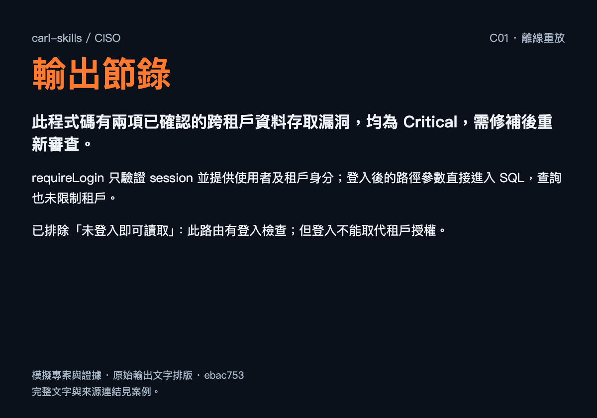
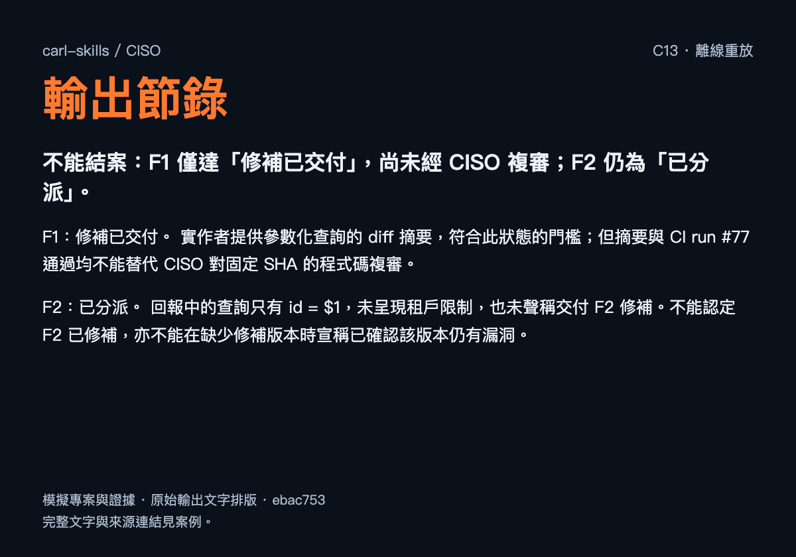
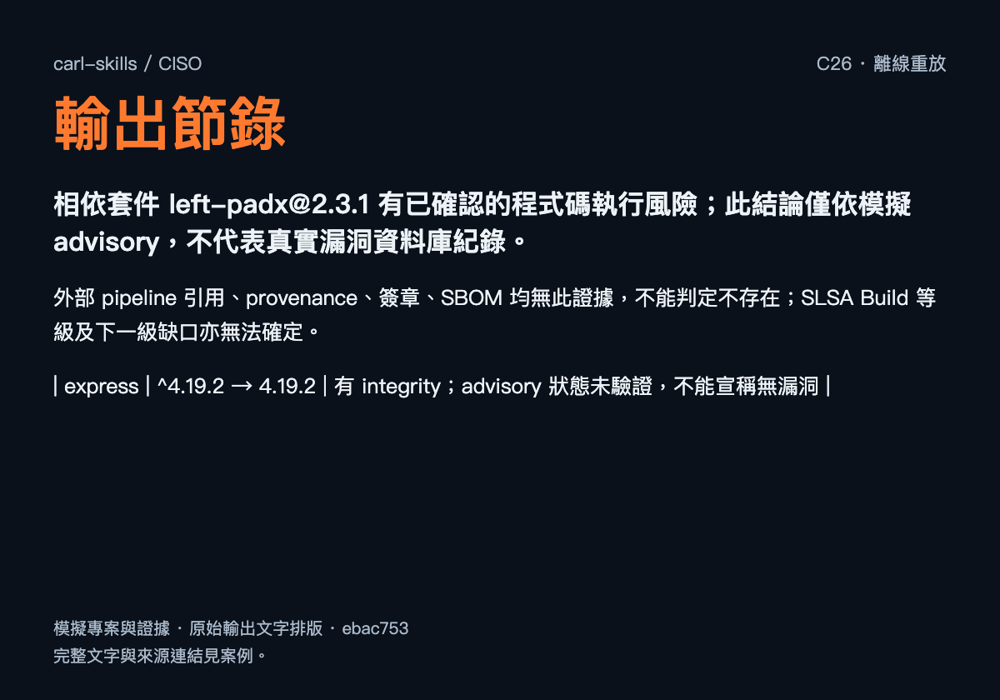
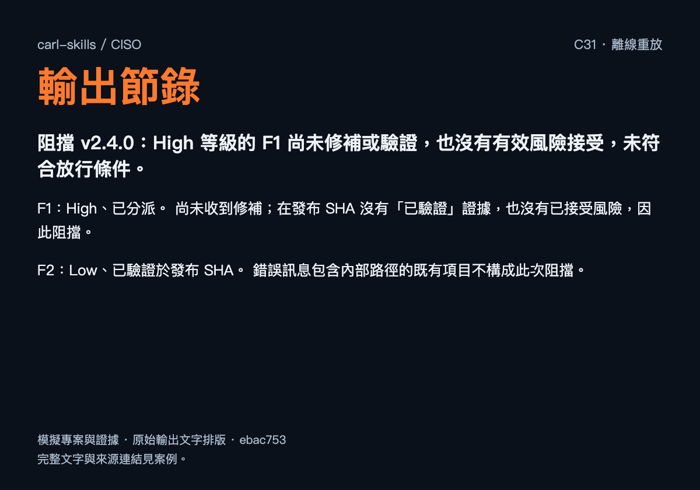

判斷與修補
各有承接者
每項確認發現都要說清楚：誰能控制輸入、哪項控制失效、跨過什麼邊界，以及影響哪個資源。
CISO 核對證據、分級與複審；程式修補交給專案實作入口，憑證與環境處置交給 DevOps 或環境負責人。風險接受由使用者決定。
評估不會自行修改程式碼、秘密或權限；有利的發布判斷也不會啟動發布。治理合規與滲透測試不在此技能範圍。
六項資安能力
用自然語言說明對象與問題；CISO 依意圖選擇職責，只回報本次要求的範圍。
- 威脅建模
功能尚未實作時，找出信任邊界、威脅假設與各自的緩解；缺少的設計事實另列。
看用法
$ciso 替付款 webhook 的設計做威脅建模。
- 程式碼審查
固定 SHA 或 diff 範圍，追查輸入、控制與受影響資源，依證據確認、分級並交接。
看用法
$ciso 審查這次發票路由變更的資安風險。
- 暴露評估
檢查密鑰外洩、權限過寬與網路暴露；環境事實不足時明列缺口。
看用法
$ciso 檢查 workflow 權限與管理介面的暴露。
- 供應鏈評估
連起宣告版本、鎖定版本、公告與使用路徑；檢查引用、簽章與產物來源證據。
看用法
$ciso 檢查相依套件與發布流程的供應鏈風險。
- 發布資安判斷
依候選版本、發現狀態與有效風險接受，提出阻擋、有條件放行或放行判斷。
看用法
$ciso 這個候選版在資安上可以放行嗎？
- 事件處理
事件進行中先處理事件：區分事實與推論，規劃證據保全、圍堵與後續追蹤。
看用法
$ciso 這個 token 疑似遭濫用，先評估並提出處置方案。
把判斷攤開看
四個案例取自實際保存的離線重放輸出。模型讀取預先提供的模擬證據，沒有呼叫工具或操作真實環境。
從程式碼、修補回報、相依套件到發布狀態，看它如何區分已知、未知與尚未驗證。
登入之後，還有租戶邊界
讀到登入檢查，仍繼續追查資料查詢；把 SQL 注入與缺少租戶限制分開說明。
模擬請求針對發票路由做資安審查，說明證據與最窄修補。
檢查路由、登入控制與資料表定義，指出參數直接拼接 SQL，也沒有用 session 的租戶身分限制查詢。原輸出將兩項列為 Critical，並交付參數化與租戶隔離的修補 brief。
驗證邊界：這是給定程式碼的靜態推導；沒有執行利用、測試或量測實際受影響資料量。
讀 C01 固定版本輸出

C01 真實重放輸出的節錄排版；點圖放大。案例內的專案、版本與證據均為模擬資料。
展開 C01 完整輸出文字
此程式碼有兩項已確認的跨租戶資料存取漏洞，均為 Critical，需修補後重新審查。
**1. 範圍**
以 `ciso` 的 review 基準做法審查 `ledger-api`，版本為 `aaaaaaaaaaaaaaaaaaaaaaaaaaaaaaaaaaaaaaaa`。檢查唯一變更檔 `src/routes/invoices.ts:1–7`，並參照 `src/auth.ts` 與 `db/schema.sql`。
未檢查其他路由、資料庫執行期權限及部署設定；無此證據。未執行測試或任何實際操作。
**2. 判斷**
`requireLogin` 只驗證 session 並提供使用者及租戶身分；登入後的路徑參數直接進入 SQL，查詢也未限制租戶。
專案規則未指定底層資安工具，所附安裝清單亦無適用者：沒有找到底層資安技能、以基準做法完成。
已排除「未登入即可讀取」：此路由有登入檢查；但登入不能取代租戶授權。
**3. 發現**
以下均綁定上述 SHA，狀態皆為「已確認」。
- **F1：SQL 注入 — Critical**
證據：`src/routes/invoices.ts:2–6`。
主體：已登入使用者；輸入：可控制的 `:id`；控制：缺少參數化，輸入直接拼入 SQL；邊界：使用者資料變成資料庫查詢語法，並可越過租戶界線；資源：`invoices` 資料；結果：例如輸入 `' OR '1'='1`，可使查詢符合其他租戶資料，並由第 6 行回傳第一筆，實際是哪筆無此證據。
分類：OWASP 2025 A05 Injection；CWE-89（離線未核實）。最小修正：使用綁定參數。
- **F2：缺少租戶授權 — Critical**
證據：`src/routes/invoices.ts:4–6`、`src/auth.ts`、`db/schema.sql`。
主體：某租戶的已登入使用者；輸入：另一租戶發票的 ID；控制：查詢未核對 `req.user.tenantId`；邊界：租戶到租戶；資源：其他租戶發票；結果：符合該 ID 的發票可被查出並回傳。此路徑不需要 SQL 注入。
分類：OWASP 2025 A01 Broken Access Control；CWE-639（離線未核實）。最小修正：查詢同時限制 `id` 與目前使用者的 `tenant_id`。
待驗證項：無。實際受影響資料量無此證據。
**4. 分派**
承接入口：專案 `/implement`。以下為交接 brief，未實際送出，故未標記「已分派」。既有 tracker 是否已有對應項目：無此證據。
- 目標：修復 F1、F2；證據、六元素及嚴重度如上。
- 不變條件：輸入只能作為資料；使用者只能讀取自己租戶的發票。
- 最窄修補：改為 `WHERE id = $1 AND tenant_id = $2`，綁定路徑 ID 與 session 租戶 ID。
- 回歸驗證：以隔離測試資料確認同租戶可讀、跨租戶不可讀，注入字串不能改變查詢語意。
- 完成條件：提供修補 diff、固定 SHA 與測試結果，再由 CISO 重審原始利用路徑。
- 授權及待決事項：目前僅授權評估；實作需使用者另行授權。
**5. 後續**
由使用者決定是否交付 `/implement` 修補；交付後先標記「修補已交付」，經固定 SHA 重審才可標記「已驗證」。本次未修改或寫入任何檔案。
CI 通過，仍須複審
收到參數化查詢摘要與 CI 通過回報，保留「修補已交付」與「已驗證」之間的差別。
模擬請求修補者說已改好，CI 也過了，這兩項可以結案嗎？
F1 只有修補摘要，列為「修補已交付」；F2 的查詢仍未呈現租戶條件，維持「已分派」。要求固定修補 SHA 與完整程式碼，再逐項複審原利用路徑。
驗證邊界：沒有取得修補版本，不能宣稱新版本仍有漏洞，也不能以實作者摘要或 CI 代替獨立驗證。
讀 C13 固定版本輸出

C13 真實重放輸出的節錄排版；點圖放大。案例內的專案、版本與證據均為模擬資料。
展開 C13 完整輸出文字
不能結案：F1 僅達「修補已交付」，尚未經 CISO 複審；F2 仍為「已分派」。
### 1. 範圍
本次為修補狀態評估，對象是 `ledger-api` 的 F1、F2，原確認版本為 `aaaaaaaaaaaaaaaaaaaaaaaaaaaaaaaaaaaaaaaa`。
修補後 SHA、完整檔案及測試內容：**無此證據**。未執行測試或任何實際操作。
### 2. 判斷
- **F1：修補已交付。** 實作者提供參數化查詢的 diff 摘要，符合此狀態的門檻；但摘要與 CI run #77 通過均不能替代 CISO 對固定 SHA 的程式碼複審。
- **F2：已分派。** 回報中的查詢只有 `id = $1`，未呈現租戶限制，也未聲稱交付 F2 修補。不能認定 F2 已修補，亦不能在缺少修補版本時宣稱已確認該版本仍有漏洞。
- 原版本結論不能直接套用至未知的修補版本；目前也無法建立「已驗證」狀態。
- 沒有找到底層資安技能、以基準做法完成。
### 3. 發現
以下為既有發現，均綁定原 SHA，沒有新增已確認發現：
| 項目 | 證據與六要素 | 分級／狀態 |
|---|---|---|
| F1 SQL 注入 | `src/routes/invoices.ts:2–6`：已登入使用者控制路徑 `id`；缺少參數化，跨越請求至資料庫查詢邊界，影響發票資料，可改變 SQL 條件並使結果回傳。 | High；OWASP 2025 A05；CWE-89（識別碼未連線核實）；**修補已交付** |
| F2 跨租戶讀取 | 同檔 `:2–6`，配合 `src/auth.ts`、`db/schema.sql`：某租戶使用者控制發票 ID；僅驗證登入，查詢未限制 `tenant_id`，跨越租戶邊界，可回傳其他租戶發票。 | High；OWASP 2025 A01；CWE-639（識別碼未連線核實）；**已分派** |
待驗證：修補版本是否封閉原攻擊路徑。決定性缺口為固定 SHA 與完整相關程式碼；取得後以靜態複審及隔離測試驗證。
### 4. 分派
供既有接收者 `/implement` 接續的 brief，未另行送出：
- **目標／證據：**處理上述 F1、F2，提交修補 SHA、diff、路由與相關測試。
- **不變條件／最小修補：**查詢參數必須作為資料處理；發票讀取必須同時限制為 session 的 `tenantId`。
- **回歸測試：**注入輸入不得改變查詢語意；跨租戶 ID 不得回傳資料；同租戶合法查詢正常。
- **完成條件：**CISO 在修補 SHA 親自複審控制與原攻擊路徑後，逐項判定是否「已驗證」。
- **授權／使用者決定：**目前僅授權評估；新增實作需使用者授權。本報告不授權修改。
### 5. 後續
先取得修補 SHA 與檔案，再複審 F1、F2。現階段保留兩項未結案，不以實作者回報或 CI 通過替代驗證。
未知，保留為未知
套件有 integrity，不等於公告已查完；沒拿到 provenance，也不等於它不存在。
模擬請求檢查相依套件與供應鏈，指出已知風險與證據缺口。
對模擬套件 left-padx，結合鎖定版本、模擬 advisory 與可達呼叫路徑判斷。對 Express 的公告狀態保留未驗證；對沒有提供的 provenance、簽章與 SBOM 保留未知，SLSA Build 等級無法確定。
驗證邊界：left-padx 與 FICTIONAL-2026-0001 是測例資料，不是真實漏洞公告；本次沒有查詢網路或完整相依樹。
讀 C26 固定版本輸出

C26 真實重放輸出的節錄排版；點圖放大。案例內的專案、版本與證據均為模擬資料。
展開 C26 完整輸出文字
相依套件 `left-padx@2.3.1` 有已確認的程式碼執行風險；此結論僅依模擬 advisory，不代表真實漏洞資料庫紀錄。
**1. 範圍**
唯讀供應鏈評估；服務 `ledger-api`，SHA `aaaaaaaaaaaaaaaaaaaaaaaaaaaaaaaaaaaaaaaa`。檢查 `package.json`、lockfile 節錄與 `src/render.ts:5`。未檢查完整相依樹、建置與發布流程，因無此證據。
**2. 判斷**
專案未指定底層資安工具，已安裝清單亦無匹配者：沒有找到底層資安技能、以基準做法完成。
| 套件 | 宣告 → 鎖定版本 | 完整性／判斷 |
| --- | --- | --- |
| left-padx | `^2.3.1` → `2.3.1` | 有 integrity；符合模擬 advisory，且有可達使用路徑 |
| express | `^4.19.2` → `4.19.2` | 有 integrity；advisory 狀態未驗證，不能宣稱無漏洞 |
來源為 `package.json:1`、`package-lock.json:1–2`、`advisory-fixture.json`。未進行網路查詢。lockfile 已鎖定上述版本；版本範圍本身不另列漏洞。
外部 pipeline 引用、provenance、簽章、SBOM 均無此證據，不能判定不存在；SLSA Build 等級及下一級缺口亦無法確定。
**3. 發現**
**SC-1｜Critical｜已確認｜上述 SHA**
證據：`src/render.ts:5`、`package-lock.json:1`、模擬識別碼 `FICTIONAL-2026-0001`。
六要素：主體為可控制請求查詢參數的呼叫者；輸入為 `req.query.template`；控制缺陷為受影響的 `pad()` 會求值輸入中的模板；跨越請求資料至伺服器程式執行邊界；資源為應用程式執行程序；結果依 advisory 與呼叫路徑可推導為攻擊者控制輸入導致程式碼執行，未做動態重現。端點驗證、程序權限及其他資源可達性無此證據，不據此擴大影響。
分類：OWASP 2025 A03；CWE-94（未經官方來源核實）。最窄修補為升級至 advisory 指定的 `2.3.4` 或經確認不受影響版本，更新 lockfile。
其他待驗證項：無；Express 屬缺少 advisory 資料，並非已知漏洞。
**4. 分派**
擬交付 `/implement`，尚未實際分派。Brief：目標為消除 SC-1；證據、六要素及嚴重度如上。不變條件為查詢內容只能作資料，不能執行。採最窄升級；在隔離環境以假資料測試惡意模板不執行，並確認正常補齊行為。完成條件為提交修補 diff、固定 SHA、解析版本及測試證據，再由 CISO 複審。目前僅授權評估，實作需使用者授權；需決定是否採納修補。既有 tracker 工單無此證據。
**5. 後續**
由 `/implement` 承接修補；評估者取得完整相依清單及 advisory 資料後補查。交付修補僅能標為「修補已交付」，複審前不得稱「已驗證」。本次未修改或寫入任何內容。
已分派，仍會阻擋
High 風險只有接收者，尚無修補驗證或有效風險接受，不能因為排進待辦就放行。
模擬請求候選版的 High 發現已分派，可以發布嗎？
F1 為 High、已分派，在候選 SHA 沒有驗證證據或有效接受，因此判斷阻擋。F2 的 Low 項已在發布 SHA 驗證，不能拿來抵銷 F1。報告列出修補、補證與使用者決策的承接者。
驗證邊界：這是對給定候選版與既有發現的發布資安判斷；不重建未提供的原始漏洞，也不啟動發布。
讀 C31 固定版本輸出

C31 真實重放輸出的節錄排版；點圖放大。案例內的專案、版本與證據均為模擬資料。
展開 C31 完整輸出文字
**阻擋 v2.4.0：High 等級的 F1 尚未修補或驗證，也沒有有效風險接受，未符合放行條件。**
1. **範圍**
採 gate 檢查／評估模式，對象為 `ledger-api` v2.4.0，固定 SHA `dddddddddddddddddddddddddddddddddddddddd`。評估 F1、F2 的既有狀態；候選版原始碼、前次審查至候選版的 diff、變更紀錄與部署環境均無此證據，未檢查。
2. **判斷**
- **F1：High、已分派。** 尚未收到修補；在發布 SHA 沒有「已驗證」證據，也沒有已接受風險，因此阻擋。
- **F2：Low、已驗證於發布 SHA。** 錯誤訊息包含內部路徑的既有項目不構成此次阻擋。
- `F-release-refs` 雖列出修補 SHA `bbbb…`，但無此證據證明它修補 F1、包含於候選版，或相關控制未再變動，不能據此提升狀態。
- 專案規則未指定底層資安工具；安裝清單亦無符合者。**沒有找到底層資安技能、以基準做法完成。**
3. **發現**
新確認發現：無。新待驗證項：無。
既有 F1 位於 `src/routes/invoices.ts:4`，SQL 注入，High，狀態維持**已分派**。本次未提供完整六要素及原始審查證據包，無法獨立重建漏洞路徑；不將既有結論冒充本次重新確認。
4. **分派**
擬交付專案 `/implement` 的 brief，尚未實際派送或修改：
- **目標／證據：**關閉 F1；沿用上述位置與 High 判定，先補齊原審查的主體、輸入、控制、邊界、資源、結果。
- **不變條件／最窄修補：**外部輸入不得改變 SQL 結構；於查詢邊界採參數化，具體差異待讀碼確認。
- **回歸／完成條件：**以隔離資料及惡意輸入驗證查詢結構不變、正常查詢可用；交付 diff、固定 SHA 與測試證據，再由 CISO 複審發布 SHA 的原利用路徑。
- **授權／使用者決定：**實作需另行授權。若選擇接受風險，決定屬於使用者，本技能只能建議；須明示理由、範圍及重審條件。
5. **後續**
`/implement` 承接修補；發布負責人補齊 diff、變更紀錄及版本關係證據；CISO 複審後重判。F1 驗證通過或獲有效風險接受，且其餘缺口完成評估，才可能改判放行。本評估不啟動發布，也不取代使用者的發布決定。
證據到哪裡
結論就到哪裡
| 證據 | 這裡能支持什麼 | 仍有限制 |
|---|
| 四份案例輸出 | C01、C13、C26、C31 在給定 fixture 下的實際文字判斷。 | 單次樣本不代表每次穩定，也不是實際漏洞利用或修補驗證。 |
|---|
| 離線驗證紀錄 | 報告保留完整重放、重複取樣、案例對齊理由與後續修正。 | C35 最後三個樣本為 2/3；仍有事件處置漏項。SQL 注入嚴重度與部分 CWE 分類曾波動。 |
|---|
| 工具與真實環境 | 此批案例使用預先提供的程式碼、公告與版本關係。 | 沒有工具呼叫；不能據此宣稱已驗證掃描器整合、底層技能委派、provider 連線或真實事件處理。 |
|---|
案例與完整文字固定於 2026-10-23 驗證紀錄（ebac753）。這是歷史檢查點，不是對最新 skill 版本的完整通過聲明。查看當時的案例與預期。
只裝 CISO
每個 skill 是可獨立安裝的目錄。以下指令安裝至 Codex 與 Claude Code 的全域技能目錄；執行前需有 Node.js 與 npm。
npx skills add CarlLee1983/carl-skills --skill ciso -g -a codex claude-code
安裝後，在專案裡提供審查範圍與版本，例如：
$ciso 審查目前分支相對 main 的資安風險，先提供評估。
閱讀目前的 skill 與方法來源 · 安裝說明